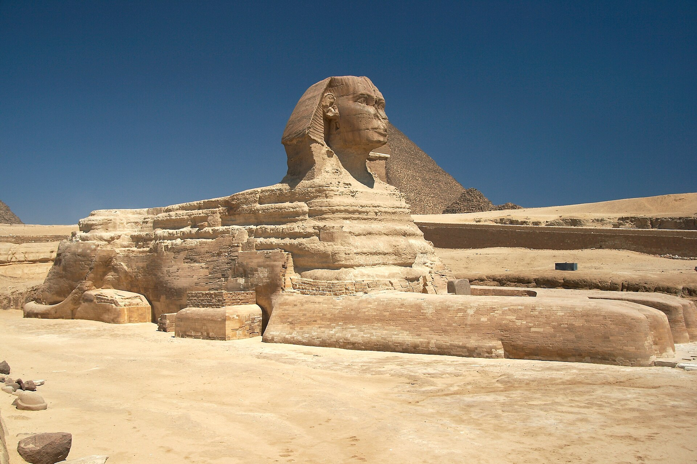
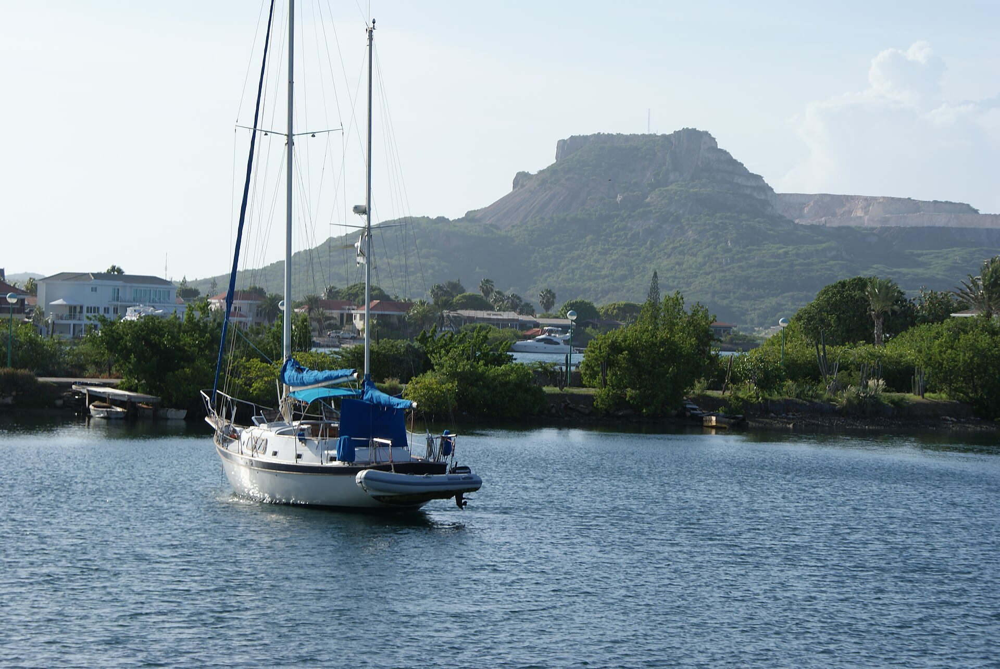
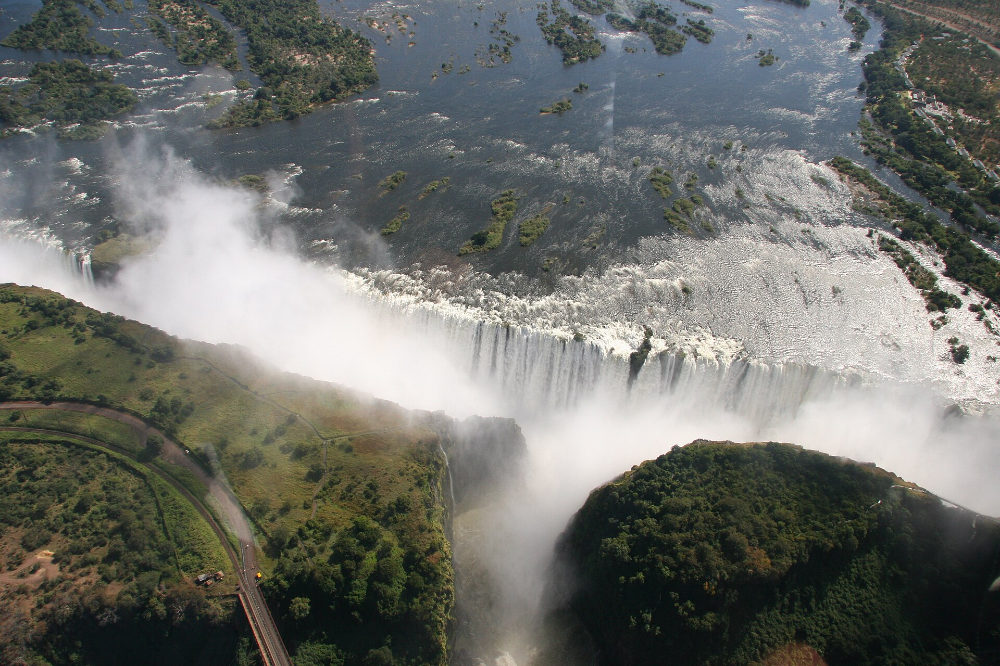
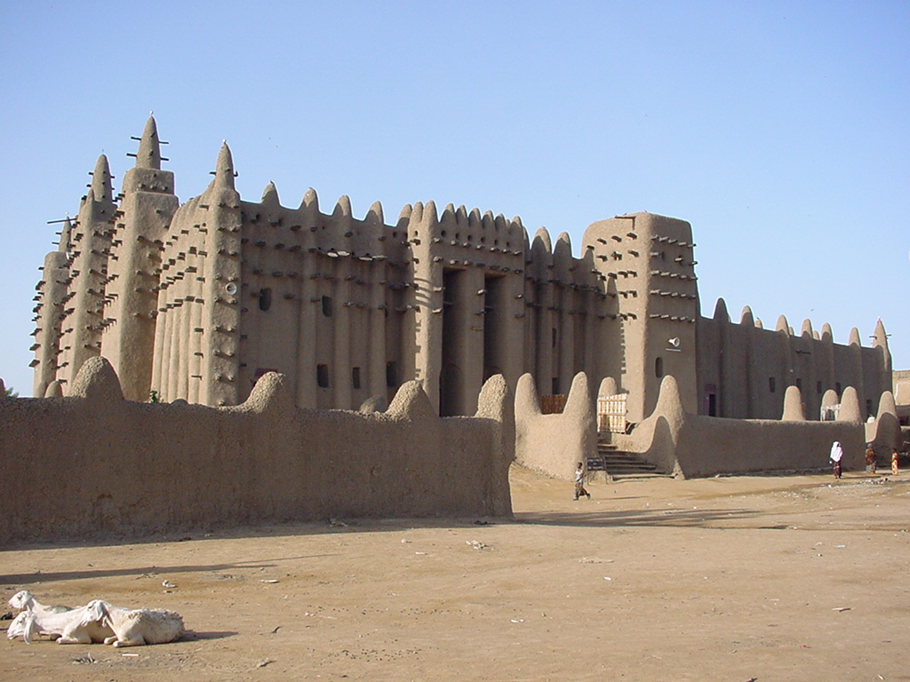
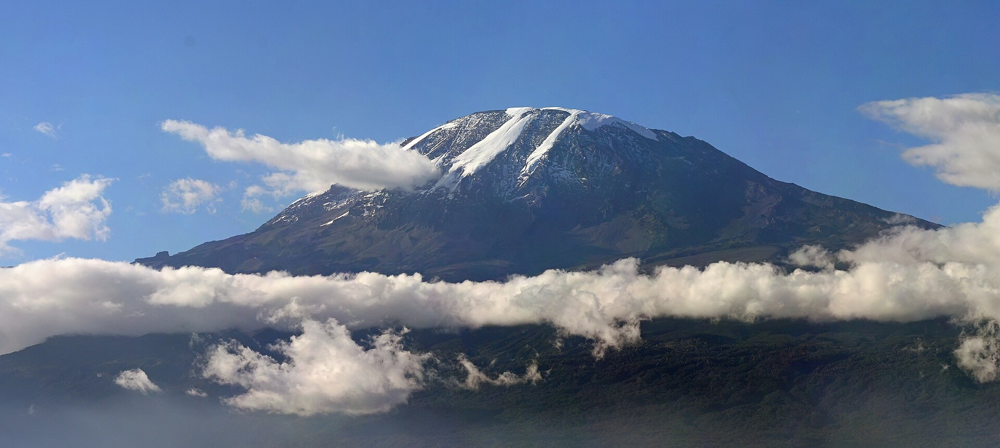
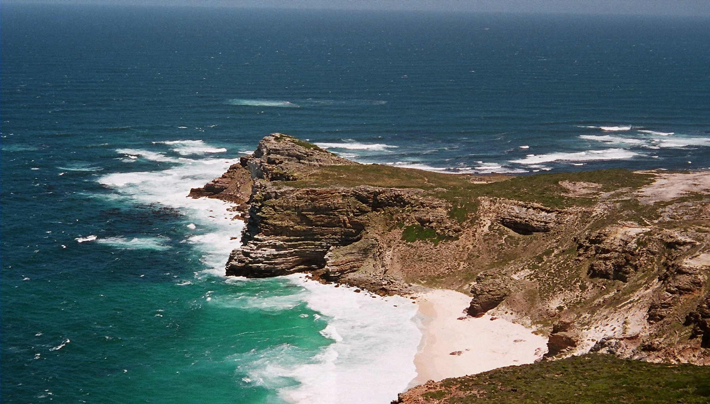

Überblick
Wahrzeichen Afrikas verbinden monumentale Architektur, außergewöhnliche Naturformen und Orte langer kultureller Kontinuität. Anders als in vielen europäischen Wahrzeichen-Kanons, die stark auf Städte und Sakral- oder Staatsbauten fokussieren, spielen in Afrika Plateaus, Wasserfälle, Vulkane und Küstenvorsprünge eine gleichberechtigte Rolle neben Pyramiden, Moscheen und Festungsbildern. Für die Enzyklopädie-Struktur der Geografie ergänzt dieser Artikel den Kontinent-Einstieg um sichtbare Ankerpunkte: Sie helfen, physische Großräume (Niltal, Hochland Ostafrikas, Südspitze, Sahel) mit Geschichte und heutiger Wahrnehmung zu verknüpfen.
Die sieben hier behandelten Objekte sind exemplarisch gewählt – von der altägyptischen Nekropole bei Gizeh über westafrikanische Lehmbaukunst bis zu landmarkenhaften Landschaftsformen Südafrikas und Ostafrikas. Manche Namen (Victoriafälle) spiegeln koloniale Umbenennung; lokale Bezeichnungen (Mosi-oa-Tunya) gehören zur vollständigen geografischen Beschreibung. UNESCO-Welterbe-Status, Nationalparks und religiöse Nutzung prägen Erhalt und Besuch, ohne dass jedes Wahrzeichen denselben Schutzstatus hat. Die Liste erhebt keinen Anspruch auf Vollständigkeit: Großzimbabwe, die Felsenkirchen von Lalibela, die Medina von Tunis oder die Dünen der Namib wären ebenso legitim – die Auswahl zielt auf hohe Wiedererkennbarkeit und geografische Streuung.
Gemeinsam ist den Objekten eine starke visuelle Prägnanz und eine Geschichte der Fremd- und Eigenbeschreibung: Antike Reisende zählten die Pyramiden zu den Weltwundern; neuzeitliche Expeditionen kartierten Fälle und Kap; moderne Staaten und Tourismusindustrien nutzen Silhouetten als Marken. Klimatische Extreme – von hyperaridem Wüstenrand bis zu äquatorialen Höhenstufen – und tektonische Großstrukturen (Ostafrikanisches Rift, südliche Kontinentalränder) erklären, warum Naturwahrzeichen hier besonders prominent sind. Die Abschnitte unter „Die Wahrzeichen“ skizzieren Lage, Entstehung bzw. Bau und spätere Rezeption – mit vorsichtigen Angaben zu Maßen und Datierungen, wo Forschung und Messmethoden Spielräume lassen.
Wahrzeichen sind hier also nicht nur „Sehenswürdigkeiten“, sondern Knotenpunkte, an denen Tektonik, Klima, Religion, Handel und koloniale wie postkoloniale Bildpolitik lesbar werden. Wer Afrika über Landmarken erschließt, sollte lokale Namen, Schutzstatus und die eigene Position als Betrachter mitdenken – gerade weil globale Bildarchive oft nur wenige Ikonen wiederholen.
Die Wahrzeichen
Pyramiden von Gizeh
Die Pyramiden von Gizeh liegen auf dem Plateau westlich des Nils bei Kairo und gehören zum UNESCO-Welterbe „Memphis und seine Nekropole“ (1979). Die drei großen Königsgräber der 4. Dynastie – Cheops (Khufu), Chephren (Khafre) und Mykerinos (Menkaure) – markieren den Höhepunkt der Pyramidenbaukunst des Alten Reiches. Die Cheops-Pyramide galt in der Antike als eines der Sieben Weltwunder und ist das einzige weitgehend erhaltene dieser klassischen Liste. Genau Datierungen der Regierungszeiten schwanken in der Ägyptologie; grob gehören die Bauten in die Mitte des 3. Jahrtausends v. Chr.
Die Anlagen umfassen Pyramide, Totentempel, Aufweg und Taltempel sowie Nebenpyramiden und Arbeiterfriedhöfe. Baumaterial war vor allem lokaler Kalkstein; Granit und feinere Verkleidungen ergänzten ausgewählte Bereiche. Wie die Blöcke bewegt und gesetzt wurden, bleibt Gegenstand laufender Forschung; gesichert ist der immense organisatorische Aufwand einer zentralisierten Staatlichkeit. In der Neuzeit prägten Ausgrabungen, Tourismus und Stadtwachstum Kairos die Umgebung. Die Pyramiden sind zugleich Grabmonumente, technische Meisterleistungen und globale Bildsymbole Ägyptens – und damit Afrikas älteste durchgängig berühmte Landmarkengruppe. Für die physische Geografie des Kontinents markieren sie den Übergang von fruchtbarer Nilflussebene zu westlicher Wüstenstufe: ohne diese ökologische Grenzlage wäre die Nekropole so nicht denkbar. Moderne Infrastruktur und Luftverschmutzung stellen den Schutz vor neue Aufgaben, während die Anlagen weiterhin als Maßstab monumentaliger Staatlichkeit im Alten Orient gelten.
Sphinx von Gizeh

Die Sphinx von Gizeh ist eine freistehende Kalksteinskulptur mit Löwenkörper und Menschenkopf am Ostrand des Gizeh-Plateaus, dem Taltempelbereich der Chephren-Anlage zugeordnet. Sie gilt weithin als Werk der 4. Dynastie und wird häufig mit König Chephren in Verbindung gebracht; alternative Zuschreibungen und genaue Entstehungsphasen werden in der Forschung diskutiert. Die Figur ist aus dem anstehenden Fels herausgearbeitet und mit Ausbesserungen versehen; Wind, Sand und Grundwasserschwankungen haben die Oberfläche über Jahrtausende angegriffen.
In der Antike und späteren Epochen wurde die Sphinx kultisch und legendär aufgeladen; zeitweise war sie bis zum Hals versandet und wurde mehrfach freigelegt. Neuzeitliche Restaurierungen und der Tourismus haben den heutigen Anblick geprägt. Ikonografisch verbindet sie königliche Herrschaft mit Schutz- und Machtmotiven. Zusammen mit den Pyramiden bildet sie das klassische Ensemble von Gizeh – ein Wahrzeichen, das weniger durch Höhe als durch Unverwechselbarkeit der Form wirkt. Für die geografische Wahrnehmung Nordafrikas steht die Sphinx für die enge Kopplung von Wüstenrand, Nilflussebene und monumentaler Sakral- und Grablandschaft. Photografie, Film und Tourismuswerbung haben ihren Kopf-Löwen-Körper zu einem der meistzitierten Motive der Welt gemacht; zugleich bleibt sie archäologisch ein Objekt, an dem Datierung, Restaurierungsethik und Besuchermanagement laufend verhandelt werden.
Tafelberg

Der Tafelberg (Table Mountain, afrikaans Tafelberg) überragt Kapstadt und ist das markanteste Landschaftswahrzeichen der südafrikanischen Kapprovinz. Der flache Gipfel aus widerstandsfähigem Sandstein (Table Mountain Sandstone) über älteren Schichten entstand durch Hebung, Verwitterung und Erosion; Steilwände und die „Tafel“-Silhouette sind das Ergebnis langer geomorphologischer Prozesse, nicht menschlicher Formung. Die Höhe des Hauptplateaus liegt in der Größenordnung von etwas über 1000 Metern über dem Meer; genaue Gipfelangaben variieren je nach Messpunkt.
Floristisch gehört der Berg zur Capensis, einer der biodiversitätsreichsten Florenregionen der Erde; Teile der Kapprovinz sind als Cape Floral Region UNESCO-Welterbe. Seilbahn, Wanderwege und Nationalparkstatus machen den Tafelberg zu einem intensiv genutzten Natur- und Erholungsraum. Für Kapstadt ist die Silhouette Stadtwahrzeichen und Orientierungsmarke von See und Land. In der Geschichte der europäischen Seefahrt und der niederländisch-britischen Kolonialzeit diente der Berg als Landmarke am Übergang vom Atlantik zum Indischen Ozean – geografisch eng verknüpft mit dem Kap der Guten Hoffnung weiter südlich. Wolken, die sich häufig über der Tafel bilden („tablecloth“), und die benachbarten Gipfel Lion’s Head und Devil’s Peak ergänzen das charakteristische Panorama der False Bay und der Atlantikküste. Brandgefahr, invasive Arten und intensiver Besucherzahlen-Druck gehören zu den aktuellen Managementthemen des Nationalparks.
Victoriafälle

Die Victoriafälle (englisch Victoria Falls; lokal vor allem Mosi-oa-Tunya, „der Rauch, der donnert“) liegen am Sambesi an der Grenze zwischen Sambia und Simbabwe und sind seit 1989 UNESCO-Welterbe. Der Fluss, an dieser Stelle über einen Kilometer bis rund 1,7 Kilometer breit (Angaben je nach Messdefinition), stürzt in eine Folge basaltischer Schluchten; Gischtwolken sind bei entsprechender Wasserführung weithin sichtbar. UNESCO beschreibt die Fälle als eines der spektakulärsten Wasserfälle der Welt und betont geologische wie ästhetische Werte.
Die heutige Fallkante ist Teil einer längeren Geschichte von rückschreitender Erosion; ältere Fallpositionen zeichnen sich in den Schluchten ab. David Livingstone besuchte die Fälle 1855 und popularisierte den Kolonialnamen zu Ehren Königin Victorias; für die Anrainer war der Ort längst religiös und wirtschaftlich bedeutsam. Nationalparks beider Staaten, Tourismus und Infrastruktur (Brücke, Städte Livingstone und Victoria Falls) prägen die heutige Nutzung. Als Wahrzeichen steht Mosi-oa-Tunya für die Kraft großer afrikanischer Ströme und für die Spannung zwischen lokalen und kolonialen Benennungen in der geografischen Kartierung. Wasserführung schwankt stark mit Regenzeit und Trockenzeit; Tourismus und Siedlungsdruck erfordern grenzüberschreitendes Management. Die Basaltschluchten unterhalb der Fälle sind geologische Archive der Flussgeschichte und Lebensraum bedrohter Vogelarten – ein Naturwahrzeichen, das Ästhetik und Wissenschaft gleichermaßen anspricht.
Große Moschee von Djenné

Die Große Moschee von Djenné im heutigen Mali ist das bekannteste Monument der Lehmarchitektur Westafrikas und Teil des UNESCO-Welterbes „Altstädte von Djenné“ (1988). Die heutige Großform entstand im Wesentlichen 1906–1907 als Rekonstruktion bzw. Neubau an traditionellem Ort; Vorgängerbauten reichen in die Blütezeit Djennés als Handels- und Islamzentrum (u. a. 15./16. Jahrhundert) zurück. Typisch sind massives Lehmmauerwerk, Stützpfeiler, Holzanker (toron) und eine streng gegliederte Fassade – angepasst an saisonale Überschwemmungen der Nigerbinnendelta-Region.
Djenné selbst ist seit Jahrhunderten Siedlungsraum; archäologische Funde in Djenné-Djeno belegen weit ältere urbane Traditionen. Die Moschee ist religiöses Zentrum und Gemeinschaftswerk: Regelmäßige Ausbesserungen und das jährliche Verputzen mit Lehm halten die Bausubstanz, weil Regen die Oberflächen angreift. Seit 2016 steht das Welterbe „Altstädte von Djenné“ auf der Liste des gefährdeten Welterbes – unter anderem wegen Erosion, urbanem Druck und Veränderungen traditioneller Bauweisen. Als Wahrzeichen Afrikas verkörpert die Moschee sudanisch-sahelische Islamarchitektur, handwerkliche Kontinuität und die Verletzlichkeit von Lehmstädten im Klimawandel. Sie zeigt zugleich, dass „monumental“ in Westafrika nicht an Stein gebunden sein muss: Erde, Gemeinschaftsarbeit und ritueller Unterhalt tragen Großbauten über Generationen – ein Gegenmodell zu vielen eurozentrischen Architekturgeschichten.
Kilimandscharo

Der Kilimandscharo in Tansania ist der höchste Berg Afrikas und ein freistehendes Vulkanmassiv nahe der Grenze zu Kenia. Der Hauptgipfel Kibo mit dem Uhuru Peak erreicht nach üblichen Angaben 5895 m; daneben liegen die erodierten Gipfel Mawenzi und Shira. Das Massiv entstand durch vulkanische Aktivität im weiteren Umfeld des Ostafrikanischen Grabensystems; die genauen Eruptionsgeschichten der Einzelvulkane sind Gegenstand der Geologie. Der Kilimandscharo-Nationalpark ist seit 1987 UNESCO-Welterbe.
Höhenstufen reichen von Regenwald und Heide über alpine Zonen bis zu Gletscher- und Firnresten nahe dem Gipfel. Der Rückgang der Gletscher seit dem 20. Jahrhundert ist dokumentiert; Ausmaß und künftige Entwicklung bleiben Gegenstand von Beobachtung und Modellierung. Für benachbarte Gesellschaften ist der Berg mythisch, ökologisch (Wasserspeicher) und wirtschaftlich (Tourismus, Landwirtschaft an den Hängen) bedeutsam. Als Wahrzeichen Ostafrikas steht der Kilimandscharo für extreme Reliefkontraste nahe dem Äquator – Schnee und Eis in tropischer Breite – und für die Sichtbarkeit plattentektonisch und vulkanisch geprägter Hochländer in Afrika. Trekkingrouten, Bergführerökonomien und die Frage gerechter Einnahmen aus dem Nationalpark verbinden physische Geografie mit Entwicklungs- und Naturschutzdebatten. Der Berg erscheint auf Flaggen, Banknoten und Werbebildern und bleibt dennoch ein ökologisch sensibles Hochgebirge.
Kap der Guten Hoffnung

Das Kap der Guten Hoffnung (Cape of Good Hope) ist eine markante Landspitze der Kap-Halbinsel südlich von Kapstadt. Es ist nicht der südlichste Punkt Afrikas (dieser liegt am Kap Agulhas), wurde aber in der europäischen Seefahrtsgeschichte zum Sinnbild der Umfahrung Afrikas auf dem Weg nach Asien. Bartolomeu Dias erreichte die Region 1488; der Name „Kap der Guten Hoffnung“ verbindet sich mit der portugiesischen Hoffnung auf einen Seeweg nach Indien, den Vasco da Gama 1497–1499 nutzte. Stürmische See und die Begegnung von Atlantik- und Agulhasstrom machen die Gewässer gefürchtet und berühmt.
Landschaftlich prägen fynbos-Vegetation, Steilküsten und der Tafelberg-Komplex weiter nördlich das Bild. Schutzgebiete und der Einbezug in die Cape Floral Region Protected Areas (UNESCO-Welterbe) unterstreichen den ökologischen Wert. Für die geografische Imagination ist das Kap ein Scharnier zwischen Atlantik und Indischem Ozean, zwischen afrikanischem Kontinent und globalen Handelsrouten der Frühen Neuzeit. Als Wahrzeichen steht es weniger für ein einzelnes Bauwerk als für eine Küstenkonfiguration, an der Naturgefahr, Entdeckungsnarrative und heutiger Tourismus zusammentreffen – eng verknüpft mit Kapstadt und dem Tafelberg als urbanem Gegenstück. Leuchttürme, Wanderwege und Schutzgebiete strukturieren den heutigen Besuch; wissenschaftlich bleibt das Kap ein Referenzpunkt für Ozeanzirkulation, Biodiversität der Capensis und die maritime Globalgeschichte der Frühen Neuzeit.
Quellen
- UNESCO – Memphis and its Necropolis – the Pyramid Fields from Giza to Dahshur: https://whc.unesco.org/en/list/86/
- Encyclopaedia Britannica – „Pyramids of Giza“: https://www.britannica.com/topic/Pyramids-of-Giza
- Egypt Ministry of Tourism and Antiquities – Giza Plateau: https://egymonuments.gov.eg/archaeological-sites/giza-plateau/
- Egypt Ministry of Tourism and Antiquities – The Great Sphinx: https://egymonuments.gov.eg/en/monuments/the-great-sphinx/
- Encyclopaedia Britannica – „Sphinx“: https://www.britannica.com/topic/Sphinx-mythology
- UNESCO – Cape Floral Region Protected Areas: https://whc.unesco.org/en/list/1007/
- South African National Parks – Table Mountain National Park: https://www.sanparks.org/parks/table-mountain
- UNESCO – Mosi-oa-Tunya / Victoria Falls: https://whc.unesco.org/en/list/509/
- Encyclopaedia Britannica – „Victoria Falls“: https://www.britannica.com/place/Victoria-Falls-waterfall-Africa
- UNESCO – Old Towns of Djenné: https://whc.unesco.org/en/list/116/
- Encyclopaedia Britannica – „Djenné“: https://www.britannica.com/place/Djenne
- UNESCO – Kilimanjaro National Park: https://whc.unesco.org/en/list/403/
- Encyclopaedia Britannica – „Kilimanjaro“: https://www.britannica.com/place/Kilimanjaro
- Encyclopaedia Britannica – „Cape of Good Hope“: https://www.britannica.com/place/Cape-of-Good-Hope
- Encyclopaedia Britannica – „Cape Agulhas“: https://www.britannica.com/place/Cape-Agulhas